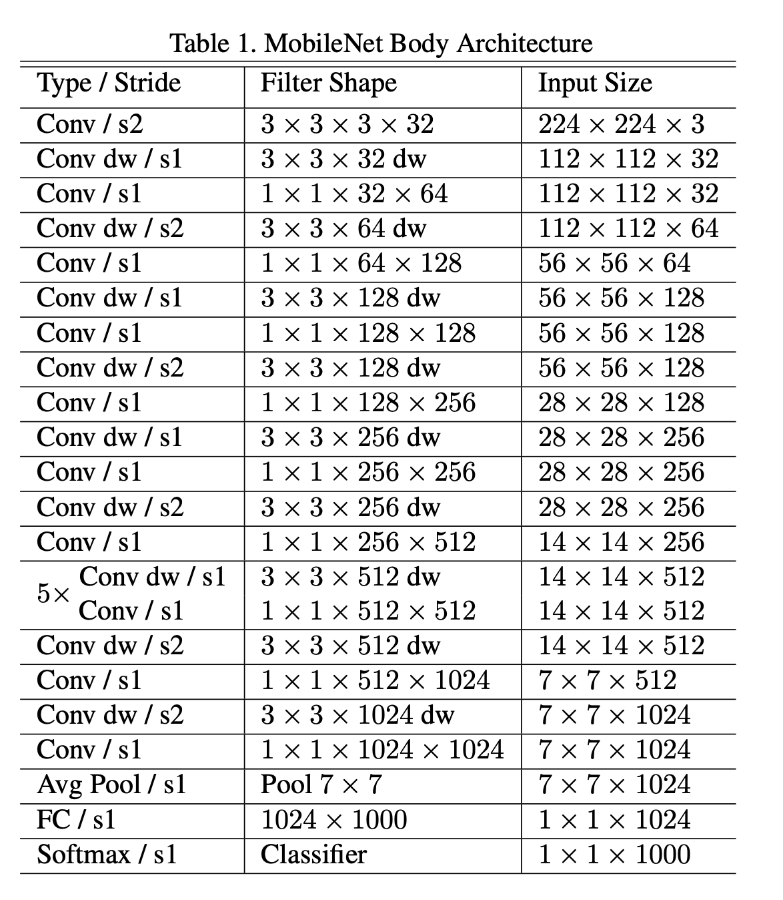
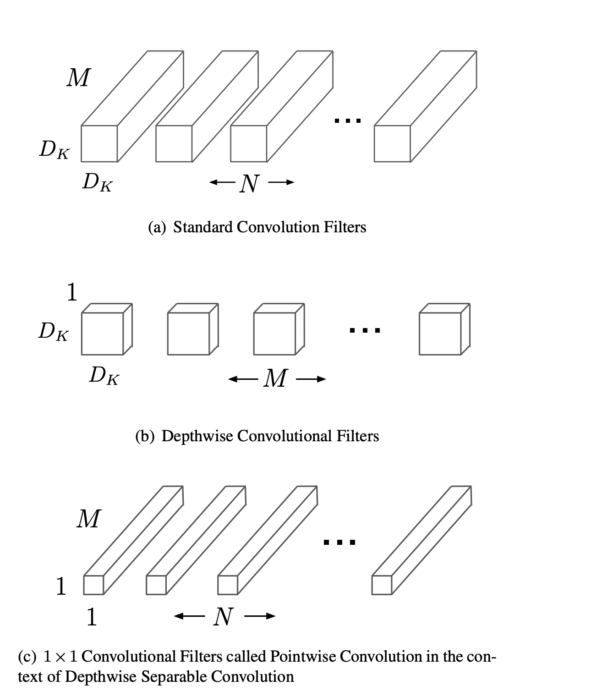

Mobile devices have become ubiquitous in our daily lives, enabling us to capture, process, and share visual information anytime and anywhere. However, running state-of-the-art computer vision models on mobile devices poses significant challenges, such as limited computational resources, battery life, and network bandwidth. Therefore, there is a need for efficient and compact models that can perform well on mobile and embedded vision applications.
Mobilenets are a family of neural networks that are designed to address these challenges. They are based on a novel architecture that uses depth-wise separable convolutions, which reduce the number of parameters and computations compared to standard convolutions. They also use width and resolution multipliers, which allow for fine-grained control over the network size and accuracy trade-off. Mobilenets can achieve comparable or even superior performance to larger and more complex models on various vision tasks, such as image classification, object detection, face recognition, and more.
In this blog post, we will explain the main ideas behind mobilenet-v1 and how they achieve high efficiency and accuracy.

Idea 1: Depth-wise separable convolutions
Depth-wise separable convolutions are the core building blocks of mobilenets. They are a variant of standard convolutions that decompose the convolution operation into two steps: depth-wise and point-wise.
A standard convolution applies a set of filters to the input feature map, producing an output feature map. Each filter has the same spatial dimensions as the input, but a different number of channels. The filter slides over the input, performing element-wise multiplication and summation at each position, and generating a scalar output. The output feature map has the same spatial dimensions as the input, but a different number of channels, depending on the number of filters.
A depth-wise convolution applies a single filter per input channel, producing an intermediate feature map. The filter has the same spatial dimensions as the input, but only one channel. The filter slides over the input, performing element-wise multiplication and summation at each position, and generating a scalar output. The intermediate feature map has the same spatial dimensions and number of channels as the input.
A point-wise convolution applies a set of filters to the intermediate feature map, producing an output feature map. Each filter has a spatial dimension of 1x1, but a different number of channels. The filter slides over the intermediate feature map, performing element-wise multiplication and summation at each position, and generating a scalar output. The output feature map has the same spatial dimensions as the intermediate feature map, but a different number of channels, depending on the number of filters.

The main advantage of depth-wise separable convolutions is that they reduce the number of parameters and computations compared to standard convolutions. This is because the depth-wise convolution only applies one filter per input channel, and the point-wise convolution only applies one filter per intermediate channel. The number of parameters and computations for a standard convolution is given by:
\[ P_s = K \times K \times C_i \times C_o \]
\[ C_s = H \times W \times K \times K \times C_i \times C_o \]
where
- \(K\) is the filter size,
- \(C_i\) is the number of input channels,
- \(C_o\) is the number of output channels
- \(H\) is the input height
- \(W\) is the input width.
The number of parameters and computations for a depth-wise separable convolution is given by:
\[ P_d = K \times K \times C_i + C_i \times C_o \]
\[ C_d = H \times W \times K \times K \times C_i + H \times W \times C_i \times C_o \]
The ratio of the number of parameters and computations for a standard convolution to a depth-wise separable convolution is given by:
\[ \frac{P_s}{P_d} = \frac{K \times K \times C_i \times C_o}{K \times K \times C_i + C_i \times C_o} \approx \frac{C_o}{1 + \frac{1}{K^2}} \]
\[ \frac{C_s}{C_d} = \frac{H \times W \times K \times K \times C_i \times C_o}{H \times W \times K \times K \times C_i + H \times W \times C_i \times C_o} \approx \frac{C_o}{1 + \frac{1}{K^2}} \]
As we can see, the ratio depends on the filter size and the number of output channels. For a typical filter size of 3x3 and a large number of output channels, depth-wise separable convolutions can reduce the number of parameters and computations by ~10x.
Idea 2: Width and resolution multipliers
Width and resolution multipliers are two global hyperparameters that mobilenets use to control the width and resolution of the network. They allow for fine-grained trade-off between network size, accuracy, and resource consumption.
The width multiplier, denoted by \(\alpha\), is used to adjust the number of filters in each layer. It is applied uniformly to all layers, except the first and the last ones. The number of filters in layer \(l\) is given by:
\[ F_l = \alpha \times F_l^0 \]
where \(F_l^0\) is the original number of filters in layer \(l\). The value of \(\alpha\) is typically chosen from the set \(\{1, 0.75, 0.5, 0.25\}\), where \(\alpha = 1\) corresponds to the original network, and smaller values of \(\alpha\) correspond to thinner networks. The effect of the width multiplier on the number of parameters and computations is given by:
\[ P_\alpha = \alpha^2 \times P_1 \]
\[ C_\alpha = \alpha^2 \times C_1 \]
where \(P_1\) and \(C_1\) are the number of parameters and computations for the original network (\(\alpha = 1\)). As we can see, the width multiplier reduces the number of parameters and computations quadratically.
The resolution multiplier, denoted by \(\beta\), is used to adjust the input size of the network. It is applied uniformly to all layers, except the first and the last ones. The input size of layer \(l\) is given by:
\[ S_l = \beta \times S_l^0 \]
where \(S_l^0\) is the original input size of layer \(l\). The value of \(\beta\) is typically chosen from the set \(\{1, 0.75, 0.5, 0.25\}\), where \(\beta = 1\) corresponds to the original network, and smaller values of \(\beta\) correspond to lower resolution networks. The effect of the resolution multiplier on the number of parameters and computations is given by:
\[ P_\beta = P_1 \]
\[ C_\beta = \beta^2 \times C_1 \]
where \(P_1\) and \(C_1\) are the number of parameters and computations for the original network (\(\beta = 1\)). As we can see, the resolution multiplier does not affect the number of parameters, but reduces the number of computations quadratically.
The optimal values of \(\alpha\) and \(\beta\) depend on the resource constraints and accuracy requirements of the application. For example, if the application requires high accuracy and has sufficient resources, then \(\alpha = 1\) and \(\beta = 1\) would be the best choice. However, if the application requires low latency and has limited resources, then smaller values of \(\alpha\) and \(\beta\) would be more suitable.
Wrapping up
In this blog post, we have learned about mobilenets, a family of efficient and compact neural networks for mobile and embedded vision applications. We have explained how mobilenets use depth-wise separable convolutions to reduce the number of parameters and computations compared to standard convolutions. We have also discussed how mobilenets use width and resolution multipliers to control the network size and accuracy trade-off.
We hope that this blog post has given you a basic understanding of mobilenets and inspired you to explore them further. In the next blog posts, we will dive deeper into MobileNetV2 and MobileNetV3.